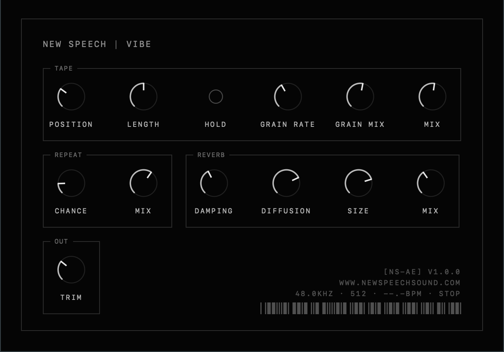
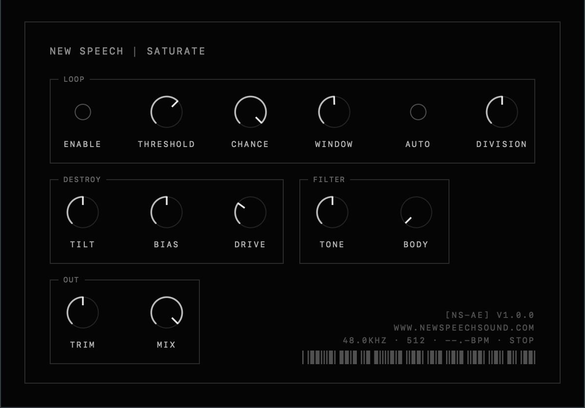

free audio effect plugins built specifically for commercially successful and financially viable use cases. used on all my projects — maybe use it on yours too?
free for everything. use them on anything, commercial or not, no credit needed. if you make something cool with them please share it — tag @newspeechsound so i get to hear it.
the destruction chain i run everything through. three stages in series: a tape loop that grabs and mangles the incoming audio, a tempo-synced repeat that dices to your session bpm, and a big plate reverb to smear whatever survives.
nothing about it is subtle or transparent. that's the point.

drive into a squelching filter, with a micro-loop that grabs and repeats slices whenever the signal crosses a threshold. tilt, bias and drive shape the curve; tone and body shape what comes out.
from a gentle push to the whole signal folding in on itself — and the loop stage means it never quite sits still.

the pattern destruction engine from the browser tool, as a plugin: six stages — crush, noise, drive, chop, glitch, feedback — drawn as blocks on a grid that locks to your session, mutating pass by pass.
in the worksthe pattern slicer as an insert: type a message and it gates whatever you send it in morse rhythm, tempo-locked, then flips, ratchets and drops symbols until it erodes into noise.
in the worksunzip, then copy the .component to ~/Library/Audio/Plug-Ins/Components and the .vst3 to ~/Library/Audio/Plug-Ins/VST3. restart your daw — logic may need a moment to rescan.
au covers logic + garageband; vst3 covers ableton, reaper, bitwig, fl studio, studio one, cubase. no aax — pro tools users can wrap them with blue cat patchwork. signed + notarized, so macos opens them without complaint.
free for everything — commercial or not, no credit needed. the code is open source under gplv3: faust dsp + a juce wrapper, one shared ui kit. source is here.